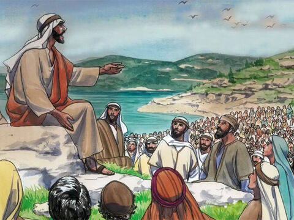
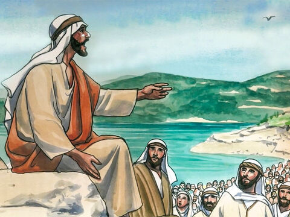
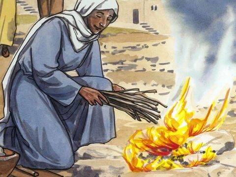
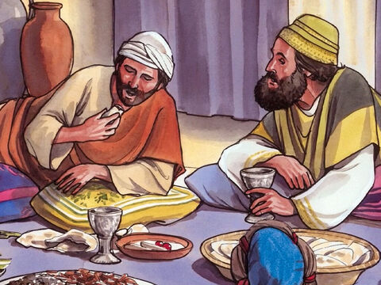
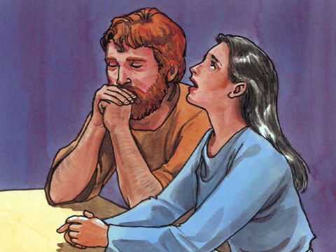
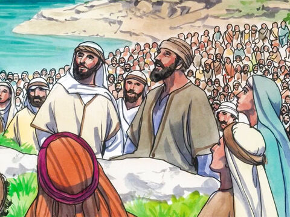

The Sermon On The Mount: Do Not Worry
Therefore I say unto you, Take no thought for your life, what ye shall eat, or what ye shall drink; nor yet for your body, what ye shall put on. Is not the life more than meat, and the body than raiment?
Behold the fowls of the air: for they sow not, neither do they reap, nor gather into barns; yet your heavenly Father feedeth them. Are ye not much better than they?
Which of you by taking thought can add one cubit unto his stature?
And why take ye thought for raiment? Consider the lilies of the field, how they grow; they toil not, neither do they spin:
And yet I say unto you, That even Solomon in all his glory was not arrayed like one of these.
Wherefore, if God so clothe the grass of the field, which to day is, and to morrow is cast into the oven, shall he not much more clothe you, O ye of little faith?
Therefore take no thought, saying, What shall we eat? or, What shall we drink? or, Wherewithal shall we be clothed?
(For after all these things do the Gentiles seek:) for your heavenly Father knoweth that ye have need of all these things.
But seek ye first the kingdom of God, and his righteousness; and all these things shall be added unto you.
ake therefore no thought for the morrow: for the morrow shall take thought for the things of itself. Sufficient unto the day is the evil thereof.
Matthew 6:25-34
- 
- 
- 
- 
- 
- 